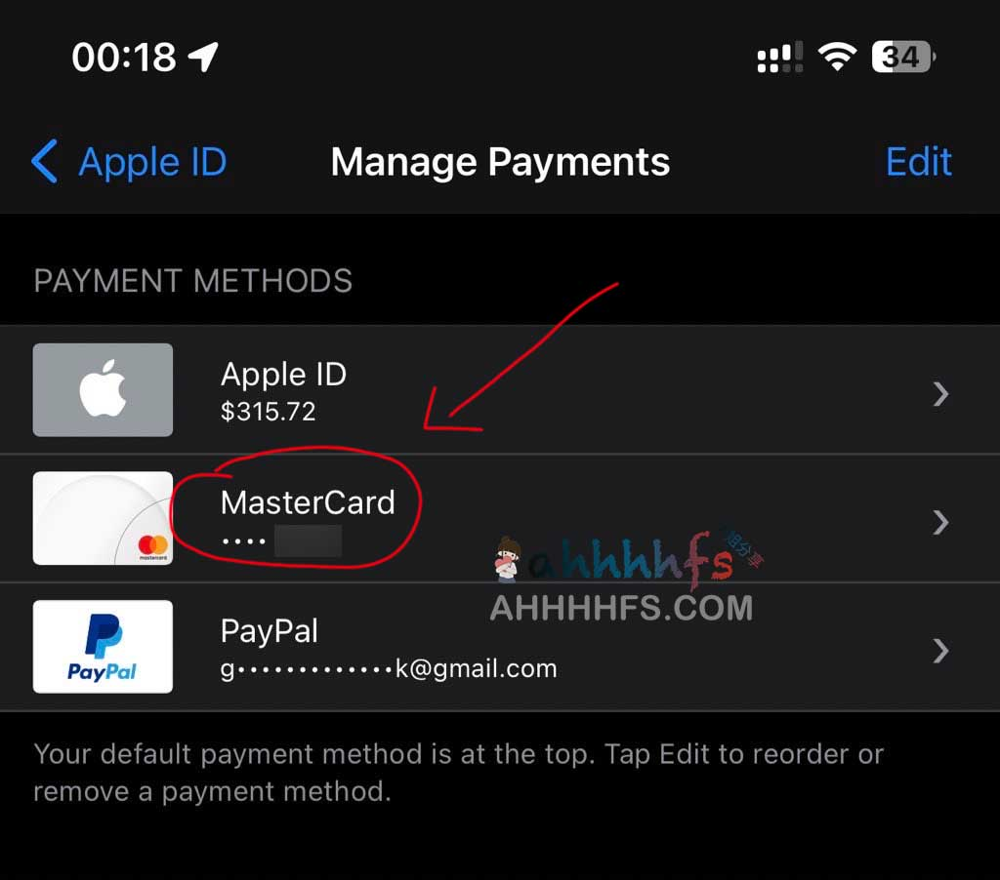

ChatGPT Plus开通教程攻略

ChatGPT Plus开通教程攻略
鉴于免费的ChatGPT账号经常无响应或者响应慢，一些已经顺利注册到ChatGPT的推特用户私信我，问我怎么开通ChatGPT Plus，于是我收集了各大佬们的各种开通ChatGPT Plus的方法，挑一个比较简单的测试了一下，目前顺利开通了ChatGPT Plus，20美金一个月，想要体验的同学可以跟着试试，目前国内大部分的master或者visa信用卡都无法通过验证的，我也是使用网友推荐的Depay信用卡成功开通ChatGPT Plus的。

而且这卡还可以绑定美区的Apple ID作为付款方式，虽然美区Apple ID可以使用支付宝或者购买礼品卡进行充值，况且我已经绑定了Paypal，这卡还可以绑定国内微信支付宝进行消费，挺不错的。ChatGPT Plus开通攻略

1、硬性条件
如果你具有两个条件，那么可以试试这个方法，能够顺利开通到ChatGPT Plus。
- ChatGPT账号
- 纯净可访问ChatGPT的网络（全局美国IP网络）
如果你没有可以在这里跟着注册一个：ChatGPT注册详细步骤攻略 亲测成功
2、注册领取虚拟信用卡
首先，你得注册一个可以绑定ChatGPT付款的信用卡：邀请注册地址
使用手机或者邮箱都可以，注册完下载app
iOS需要外区账号
安卓用户直接下载apk安装即可

下载安装完app，使用账号登录，点击申请卡，然后根据自己的情况进行选择卡片类型
- 免费开卡需要进行KYC验证
- 免KYC信息认证的需要支付10USDT
我选择的是免费开卡-标准卡，根据提示提交信息进行认证即可（大佬可以直接充钱免认证，看个人）

3、钱包充值
目前激活该卡片需要充值USDT，而且仅支持USDT-TRC20方式进行充值

我不是高级玩家，可以通过OKX、Bitop等等交易市场进行USDT-TRC20充值即可
或者身边有朋友有的，直接转到你钱包也可，A姐使用的是OKX，
不过发现我是新账号，需要7天才可以提币（不知道是不是针对我的，我也是小白）

于是没有等，喊朋友直接转到我钱包了，身边没有朋友使用的，可以使用OKX试试
开通ChatGPT需要20美元，其中转账或者兑换会有点汇率或者手续费
充值25USDT够了，我充值了30USDT，开通完剩余8USDT多一点
4、激活信用卡
等待到账号，点击充值，然后把收到的USDT充值到卡片进行激活信用卡，然后会提示余额不足，提示你把USDT兑换成USD，按要求操作即可

5、订阅开通ChatGPT Plus
激活完信用卡后，登录你的ChatGPT账号，点击Upgrade to Plus，然后点击Upgrade plan

然后填写卡片信息和账单信息
卡片信息点击信用卡app 旁边的CVV安全码获取

账单地址可以使用 虚拟美国人信息生成器获取，需要是免税州的地址，不然有额外的费用，账单地址不会填的可以抄我的。

填写完信息，点击订阅/Subscribe 等待验证即可成功订阅开通ChatGPT Plus。

欢迎关注我的博客
[www.jobcher.com](https://www.jobcher.com/)